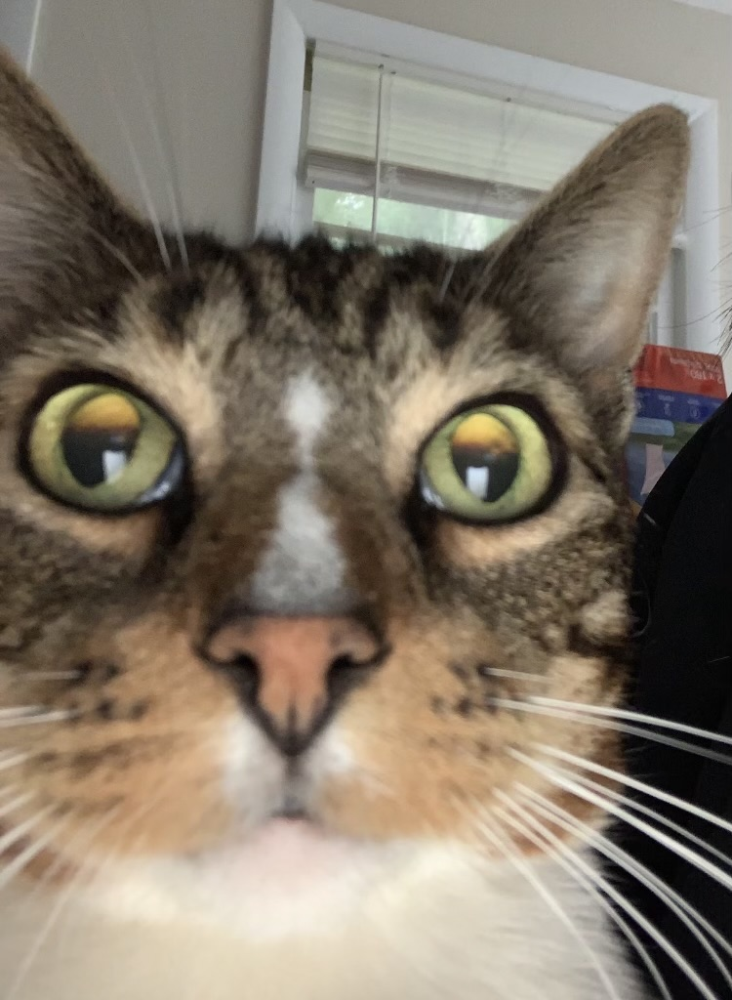
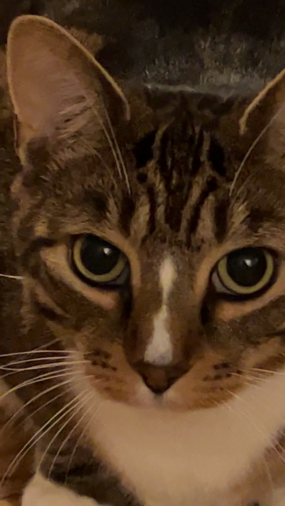
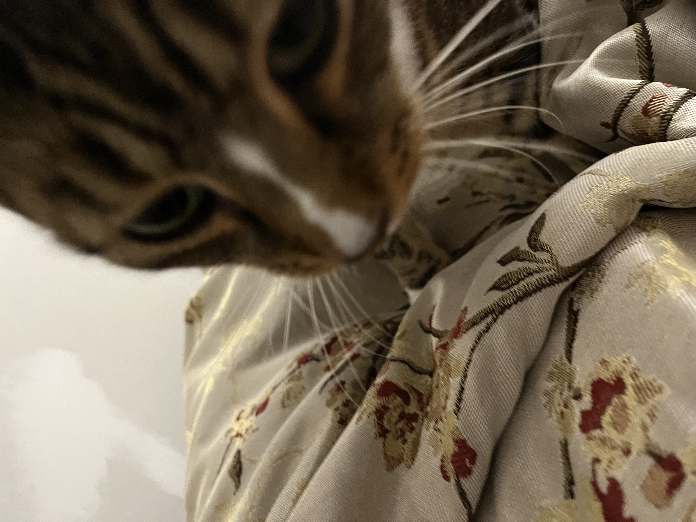
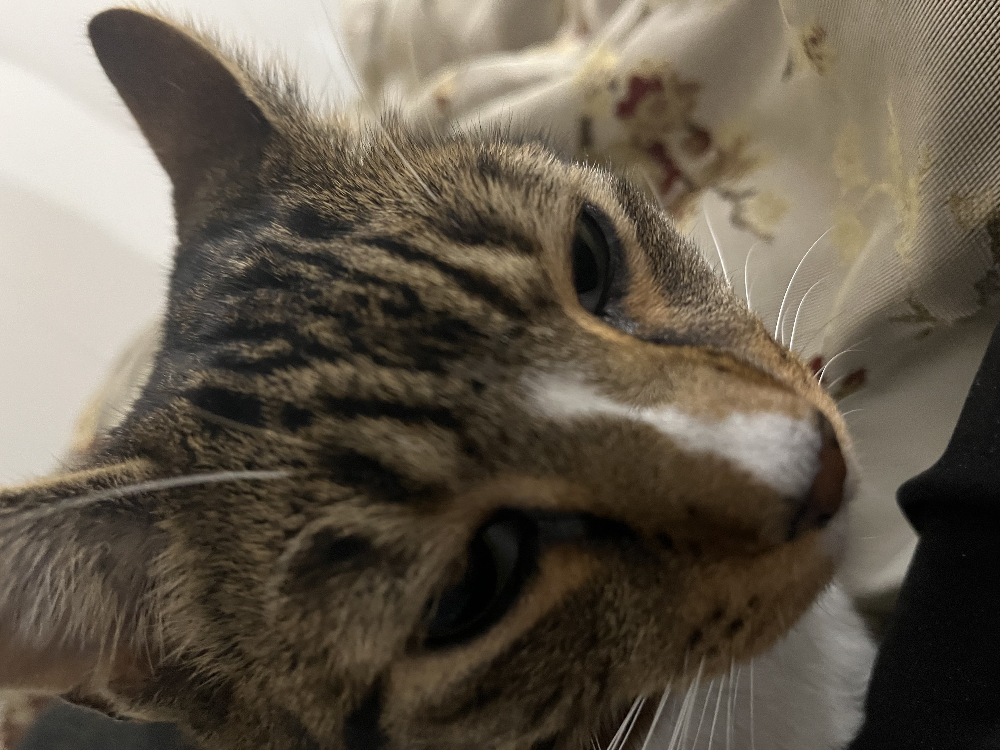

My about me page! The gallery of my cat!




This is my cat. He is very cute, friendly, and has a major in Unc status.
My background:
- I finished middle school in HJMS, located in Simsbury, Connecticut.
- I graduated from Simsbury High School in 2024. Take a guess where it's located!
- Now, I am attending Quinnipiac University in Hamden, Connecticut. I am a current freshman majoring in their CS + Cybersecurity 3+1 program.
I got into Computer Science during my senior year in high school, where I was hooked by the intriguing nature of Computer Science.
I found the underlying logic behind much of CS to be really interesting and I decided then to major in it.